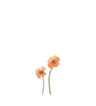

<!DOCTYPE html>
<html lang="en">
<head>
    <link rel="shortcut icon" href="loguito.png">
    <meta charset="UTF-8">
    <meta http-equiv="X-UA-Compatible" content="IE=edge">
    <meta name="viewport" content="width=device-width, initial-scale=1.0">
    <title>Flower Subscriptions Service Website</title>
    <link rel="stylesheet" href="estilos.css">
</head>
<body>
<header>
    <section class="cabeza"> 
        </html>
        <section class="botoncitos"></section>
        
       <a class="enlaces" href="https://www.nativepoppy.com/pages/flower-subscriptions"><p>FLOWERS +</p></a>
       <a class="enlaces" href="https://www.nativepoppy.com/pages/flower-subscriptions"><p>GIFTS & MERCH +</p></a>
       <a class="enlaces" href="https://www.nativepoppy.com/pages/flower-subscriptions"><p>ABOUT +</p></a>
       <a class="enlaces" href="https://www.nativepoppy.com/pages/flower-subscriptions"><p>WEDDINGS +</p></a>
       <a class="enlaces" href="https://www.nativepoppy.com/pages/flower-subscriptions"><p>CLASSES +</p></a>
     <a href="https://www.nativepoppy.com/account/login"></a>
</header>


   <div id="tarjeta"> 
<h2 style="background-color: #ffa6ad;">Wild Flower Club</p></h2> <h2 style="background-color: #ffa6ad;"><p>Flower Subscriptions</h2>
<a href="https://www.nativepoppy.com/pages/flower-subscriptions#subform-start"></a>
   </div> 


<section id="second">
    
<p>Hey! Are you a flower lover? Silly question - you wouldn’t be here if you weren’t! As all flower-</p>
<p>lovers know, flowers make the best gifts, are the sweetest form of self-care, and add that magic</p>
<p>little something to any space. That’s why we started the Wild Flower Club! A place for you to get</p>
<p>flowers regularly and at a discount.</p>
</section>

<section>
    
</section>

<div></div>

<section id="tres">
<section> <h4 class="titulos">Choose your Frequency</h4>
<p>Pick from weekly, bi-weekly, or every four weeks to </p>
<p>have blooms ready for you on the reg.</p>
</section>

<section>
<div><h4 class="titulos">Choose Your Flowers</h4></div>
<p>Customize your blooms in a bunch of ways - size,</p>
<p> paper or vase, color - oh my!</p>
</section>

<section>
<div><h4 class="titulos">Choose Pickup or Delivery</h4></div>
<p>Pick up on a day and time that is convenient for</p>
<p>you or let your blooms arrive straight to your home</p>
<p>or office door!</p>
</section>
</div>
</section>

<section class="boton"><a href="https://www.nativepoppy.com/pages/flower-subscriptions"></a></section>

<div class="pelo"></div> 
<h3></h3>
<h3 class="dos">Being a Wild Flower comes with a bunch of rad perks:</h3></section>
<div class="si">
<section><span style="color:#e8636f">Ease!</span>" Set up your subscription and let us take care of the rest."</section>

<section><span style="color:#e8636f">10%&ZeroWidthSpace; off</span>" your recurring flower order - every time!"</section>

<section><span style="color:#e8636f">10%&ZeroWidthSpace; off</span>" any additional flower order - wanna send an arrangement for your friend’s birthday? Get 10% off! Orrrrrr, sign them up for a subscription. Just sayin’"</section>

<section><span style="color:#e8636f">10%&ZeroWidthSpace; off</span>" our gift shop - cards, apparel, candles, dried flowers and more!"</section>

<section><span style="color:#e8636f">10%&ZeroWidthSpace; off</span>" workshops, events, parties, etc."</section>

<section>"Insider access to new products, free samples, and extra discounts"</section></div>

<div class="titulito"><h3>WILD FLOWER CLUB MERCH</h3></div>

<div class="productos">
<section><a href="https://www.nativepoppy.com/collections/native-poppy-merch/products/milk-chocolate-with-candied-violets-bar"></a>
<a href="https://www.nativepoppy.com/collections/native-poppy-merch/products/milk-chocolate-with-candied-violets-bar"><p>Milk Chocolate with Candied Violets Bar</p></a>
<p>$12.00</p></section>
<section><a href="https://www.nativepoppy.com/collections/native-poppy-merch/products/peach-flower-club-sweatshirt"></a>
<a href="https://www.nativepoppy.com/collections/native-poppy-merch/products/peach-flower-club-sweatshirt"><p>Peach Wild Flower Club Sweatshirt</p></a>
<p>$40.00</p></section>
<section><a href="https://www.nativepoppy.com/collections/native-poppy-merch/products/native-poppy-superbloom-candle"></a>
<a href="https://www.nativepoppy.com/collections/native-poppy-merch/products/native-poppy-superbloom-candle"><p>Super Bloom Candle | Native Poppy</p></a>
<p>$26.00</p></section>
</div>

<div class="otrosproductos"> 
<section><a href="https://www.nativepoppy.com/collections/native-poppy-merch/products/exclusive-native-poppy-candles"></a>
<a href="https://www.nativepoppy.com/collections/native-poppy-merch/products/exclusive-native-poppy-candles"><p>Native Poppy Signature Candles</p></a>
<p>$28.00</p></section>
<section><a href="https://www.nativepoppy.com/collections/native-poppy-merch/products/wild-flower-club-sweatshirt"></a>
<a href="https://www.nativepoppy.com/collections/native-poppy-merch/products/wild-flower-club-sweatshirt"><p>Wild Flower Club Sweatshirt - Grey</p></a>
<p>$36.00</p></section>
<section><a href="https://www.nativepoppy.com/collections/native-poppy-merch/products/wild-flower-club-hat"></a>
<a href="https://www.nativepoppy.com/collections/native-poppy-merch/products/wild-flower-club-hat"><p>Wild Flower Club Hat - Peach</p></a>
<p>$24.00</p></section>
</div>

<div></div>

<div class="largo">
<section>
<p>Getting a beautiful bouquet of color each week is such a treat and always brightens our day having</p>
<p>them in the office. People always comment on how gorgeous they are and each week is so different</p>
<p>and unique, it's always a fun surprise. You might not know how much fresh flowers can improve your</p>
<p>mood, until you do, then you simply can't live without them!</p></section>

<section class="titulitos"><h5>Morgan, BLOC Co-Working Spaces</h5></section>

<section><p>I was first introduced to the joy of getting a Native Poppy delivery every month from my daughter.</p>
<p>After a year of lovely arrangements arriving at my door I added a second monthly delivery. I have so</p>
<p>enjoyed the beautiful, surprising, elegant arrangements that arrive every other week. They are</p>
<p>always beautiful, fresh and vibrant and include a lovely mix of unusual and classic blossoms.</p>
<p>Whenever I want a flower delivery for friends or loved ones, I can always count on Native Poppy to</p>
<p>deliver their particular brand of love and joy.</p></section>

<section class="titulitos"><h5>Ariane</h5></section>

<section>
<p>The Native Poppy flower subscription was the perfect gift for my Mother-In-Law! Native Poppy’s</p>    
<p>bouquets are always so fresh and beautiful and she loves receiving them right to her door each</p>
<p>month. The Native Poppy staff have been incredibly helpful and have assisted us with rescheduling a</p>
<p>couple of her subscription deliveries when she was out of town. I can’t recommend them enough and</p>
<p>will definitely be gifting more flower subscriptions in the future!</p>
</section>

<section class="titulitos"><h5>Karolina</h5></section>
</div>

<div></div>

<div>
<section class="faqm"><h2>FAQ</h2></section>
<section class="titmucho"><h3>Q: Is there a minimum commitment required to sign up for a subscription?</h3></section>
`<section class="muchotexto"><p>A: Nope! We ask that you try it for a few weeks/months and if you don't love it, you</p>
<p>can cancel!</p></section>

<section class="titmucho"><h3>Q:​ Am I able to set up a subscription as a gift?</h3></section>
`<section class="muchotexto"><p>A:​ Yes! Subscriptions make awesome gifts! You can set one up for delivery so the</p>
<p>recipient receives their flowers right to their door, or for pick up if you know they are</p>
<p>already a regular and pop in frequently.</p></section>

<section class="titmucho"><h3>Q:​ Can I change my selected day of the week?</h3></section>
<section class="muchotexto"><p>A: ​Yes! A rescheduling email must be sent to hello@nativepoppy.com 72 hours</p>
<p>before your next charge date. *Please note, scheduling changes are accommodated</p>
<p>infrequently. Changes every week are not permitted.</p></section>

<section class="titmucho"><h3>Q:​ Can I change my color palette?</h3></section>
<section class="muchotexto"><p>A:​ Yes! A color palette request email must be sent to hello@nativepoppy.com 72</p>
<p>hours before your next charge date.</p></section>

<section class="titmucho"><h3>Q:​ Can I skip an order?</h3></section>
<section class="muchotexto"><p>A:​ Yes! A skip email must be sent to hello@nativepoppy.com 72 hours before your</p>
<p>next charge date.</p></section>

<section class="titmucho"><h3>Q:​ If my subscription is set as a pick up, can I pick up at either shop location?</h3></section>
<section class="muchotexto"><p>A:​ No, you will have a home shop where you pick up each time. *Your order can</p>
<p>occasionally be relocated with 72 hours notice.</p></section>

<section class="titmucho"><h3>Q:​ What happens if I miss my subscription pick up?</h3></section>
<section class="muchotexto"><p>A:​ We notify you by phone of a missed pick up and will hold your flowers in our</p>
<p>flower fridge for 48 hours. After 48 hours, your order will be forfeited.</p></section>

<section class="titmucho"><h3>Q:​ What happens if I miss my subscription delivery?</h3></section>
<section class="muchotexto"><p>A:​ You or the recipient does not need to be home to receive your flowers. If no one</p>
<p>answers, your flowers will be left in a safe, shaded area. A delivery driver will call if</p>
<p>we are unable to safely deliver your flowers. If we are unable to deliver your flowers,</p>
<p>they will be returned to our shop. You then have the option to pick them up or pay for</p>
<p>a redelivery.</p></section>

<section class="titmucho"><h3>Q:​ How do I cancel my subscription?</h3></section>
<section class="muchotexto"><p>A: ​A cancellation email must be sent to hello@nativepoppy.com 72 hours before</p>
<p>your next charge date.</p></section>
</div>

<footer>
<div  id="redes">
<section><a href="https://www.facebook.com/nativepoppyfloral/"></a> </section>
<section><a href="https://www.instagram.com/native_poppy/"></a> </section>
<section><a href="mailto:"></a> </section>
</div>

<div class="newlogo"><a href="https://www.nativepoppy.com/"></a></div>

<div id="infoo">
<section><h4>San Diego County Deliveries</h4>
<p>Wednesday - Sunday, All Day</p></section>

<section><h4>South Park</h4>
<p>3009 Grape St. San Diego, CA 92102</p>
<p>Open: Tues-Sat, 10am - 5pm</p>
</section>

<section><h4>Solana Beach</h4>
<p>142 S Cedros Ave. Solana Beach, CA 92075</p>
<p>Open: Tues-Sat, 10am - 5pm</p></section>

<section class="tel"><a href="tel:+">Call us! (619)535-0245</a></section>

</div>

<div><section class="sign"><a href="http://" target="_blank" rel="noopener noreferrer"><h3>Sign up for our mailing list</section></h3></a></div>
<section class="want"><p>Want updates, info on new product launches, and pics of</p>
<p>like, really pretty flowers? Yay - you’re in the right place!</p></section>

<div class="suscribiteporfa"><input type="email" value placeholder="Email address" name="contact[email]" id="Email" class="input-group__field newsletter__input" autocorrect="off" autocapitalize="off">
<a href="https://www.nativepoppy.com/pages/flower-subscriptions?customer_posted=true#contact_form"></a>
</div>

<section class="acciones">
<a href="https://www.nativepoppy.com/search"><p>Search</p></a>
<a href="https://www.nativepoppy.com/pages/faq"><p>FAQ</p></a>
<a href="https://www.nativepoppy.com/a/careers"><p>Careers</p></a>   
<a href="https://www.nativepoppy.com/pages/press"><p>Press</p></a>   
<a href="https://www.nativepoppy.com/pages/hours-and-location"><p>Contact</p></a>   
<a href="https://www.nativepoppy.com/pages/return-policy"><p>Return Policy</p></a>   
<a href="https://www.nativepoppy.com/pages/how-to-care-for-your-flowers"><p>Flowers Care</p></a>   
<a href="https://www.nativepoppy.com/pages/terms-of-service"><p>Terms of Service</p></a>   
<a href="https://www.nativepoppy.com/pages/delivery-options"><p>Delivery Options</p></a>  </section>

<div></div>

<section class="copy"><a href="https://www.nativepoppy.com/"><p>Copyright © 2023 Native Poppy Powered by Shopify</p></a></section>
<section class="tarjes"></section>

</footer>

</body>
</html>
